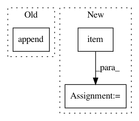

1cada380ff768d6e59aa4089734cbed74014b9bb,src/sdk/pynni/nni/nas/pytorch/enas/mutator.py,EnasMutator,on_calc_input_choice_mask,#EnasMutator#Any#Any#,92
Before Change
self.sample_entropy += torch.sum(entropy)
self.inputs = torch.matmul(skip.float(), torch.cat(anchors, 0)) / (1. + torch.sum(skip))
self._selected_inputs.append(skip)
return skip.bool()
else:
assert mutable.n_selected == 1, "Input choice must select exactly one or any in ENAS."
raise NotImplementedError
After Change
index = torch.multinomial(F.softmax(logit, dim=-1), 1).view(-1)
skip = F.one_hot(index).view(-1)
log_prob = self.cross_entropy_loss(logit, index)
self._inputs = anchors[index.item()]
self.sample_log_prob += torch.sum(log_prob)
entropy = (log_prob * torch.exp(-log_prob)).detach()
self.sample_entropy += torch.sum(entropy)
In pattern: SUPERPATTERN
Frequency: 3
Non-data size: 3
Instances
Project Name: Microsoft/nni
Commit Name: 1cada380ff768d6e59aa4089734cbed74014b9bb
Time: 2019-11-17
Author: v-yugzh@microsoft.com
File Name: src/sdk/pynni/nni/nas/pytorch/enas/mutator.py
Class Name: EnasMutator
Method Name: on_calc_input_choice_mask
Project Name: facebookresearch/pytext
Commit Name: f5278f68882ebf89a013611c86eb20345e723df2
Time: 2020-04-15
Author: twild@fb.com
File Name: pytext/models/seq_models/seq2seq_model.py
Class Name: Seq2SeqModel
Method Name: forward
Project Name: facebookresearch/pytext
Commit Name: 87436302e83a4eb01e7358bcbc04ce182d860d3b
Time: 2019-04-22
Author: kartikayk@fb.com
File Name: pytext/metric_reporters/language_model_metric_reporter.py
Class Name: MaskedLMMetricReporter
Method Name: add_batch_stats